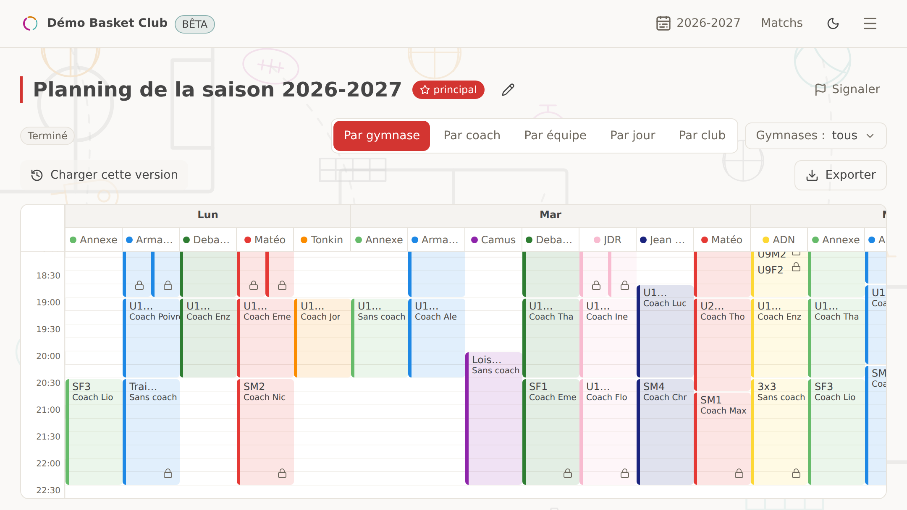
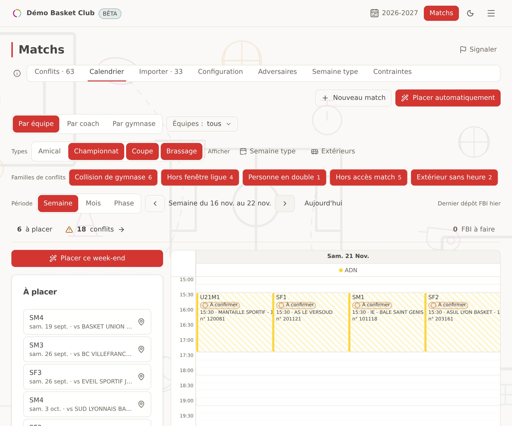
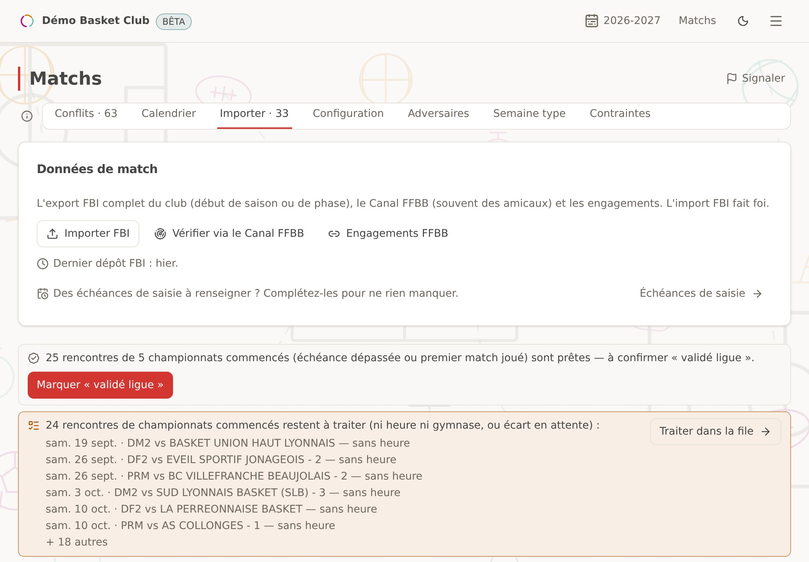
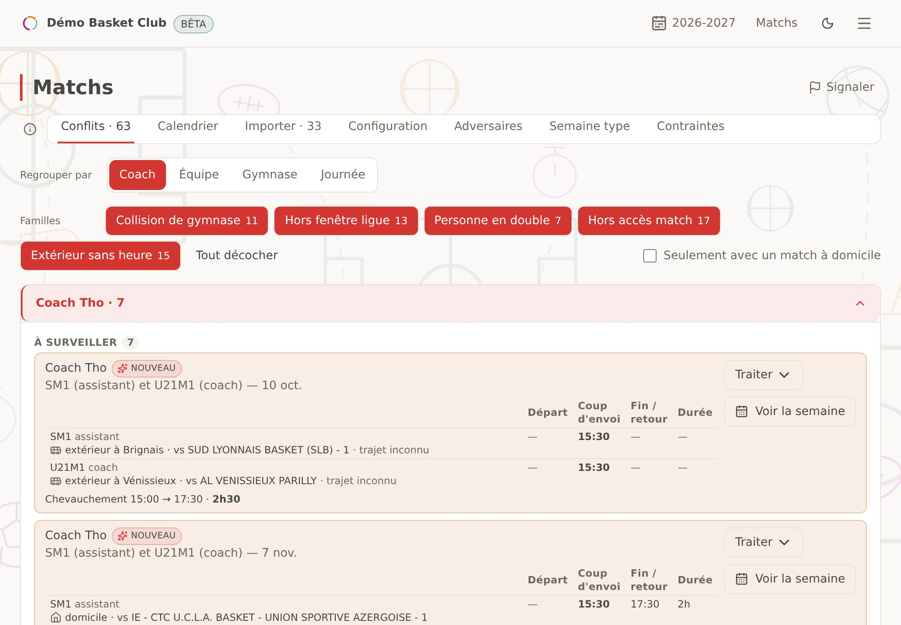

Les contraintes vivent dans une seule tête
« Le coach des U13 ne peut pas le mardi, la mairie ferme le gymnase pendant les vacances, les U9 doivent finir avant 19h… » Rien n'est écrit. Si la personne qui sait s'absente, tout s'arrête.
Dans chaque club de basket FFBB, quelqu'un passe ses soirées à répartir les créneaux de gymnase entre les équipes, en espérant n'oublier aucune contrainte. … capture toutes les contraintes du club, génère un planning optimisé en quelques minutes, et le réajuste quand la réalité change.
Gratuit pour découvrir — votre club complet, aucune carte bancaire.

Le vrai problème n'est pas le temps passé. C'est la charge mentale : tenir toutes les règles de tête, et recommencer à zéro quand une seule saute.
« Le coach des U13 ne peut pas le mardi, la mairie ferme le gymnase pendant les vacances, les U9 doivent finir avant 19h… » Rien n'est écrit. Si la personne qui sait s'absente, tout s'arrête.
Le planning était prêt. Puis quelqu'un signale un conflit de coach, et c'est reparti pour une soirée à tout décaler, en risquant d'en casser trois autres.
La mairie reprend un créneau, un coach devient indisponible, les vacances arrivent. Le planning parfait de septembre ne survit pas à novembre.
Pensé pour les gestionnaires de club — bénévoles ou salariés — pas pour des informaticiens.
Vos équipes s'importent automatiquement depuis la FFBB. Ajoutez vos gymnases, vos créneaux, vos coachs, guidé pas à pas.
« Pas le mercredi », « fin avant 19h pour les petits », « ce coach a deux équipes » : chaque règle est capturée, écrite, et ne se perd plus jamais.
Le moteur d'optimisation place toutes les équipes en respectant chaque contrainte, et vous dit honnêtement ce qui coince quand tout ne tient pas.
Glissez, verrouillez, régénérez. Vacances, matchs, imprévus : le planning suit la saison au lieu de la subir.
Le calendrier des matchs arrive de la fédération. L'app le range : les rencontres importées, les domiciles placés, les conflits repérés, les échéances suivies. Vous déposez l'export une fois, et vous n'avez plus à tout tenir de tête.
L'import du fichier FBI du club range vos rencontres par équipe, et un solveur pose vos domiciles sur les créneaux où vos gymnases sont libres — à vous d'ajuster ou de verrouiller ce qui doit l'être.
L'écran « FBI — à faire » liste ce qui reste à saisir ou à corriger dans FBI, avec l'échéance de chaque compétition — il alerte, sans jamais bloquer.
Un radar signale à la volée un coach sur deux rencontres, un match et un entraînement en même temps, un gymnase pris deux fois ; chaque conflit se traite — dérogation demandée, réglé en interne, sans solution pour l'instant — sans jamais se masquer.
Le temps d'un match à l'extérieur intègre le trajet réel jusqu'au gymnase adverse, et l'annuaire des adversaires se localise tout seul depuis le libellé du fichier FBI, sans rien à saisir.



Invitez le président ou le trésorier avec un accès lecture : le planning, les contraintes tenues, l'outil au travail : la transparence du club, sans risque qu'un clic ne dérègle quoi que ce soit. Et les coachs reçoivent leur planning sans avoir besoin d'un compte.
Un tarif par saison, pas d'abonnement mensuel, parce qu'un club décide son budget une fois par an.
Non. Vos équipes engagées s'importent automatiquement depuis les données publiques de la FFBB dès l'inscription, avec leurs catégories et niveaux. Vous complétez avec vos gymnases, créneaux et contraintes — guidé étape par étape.
Vous gardez la main : chaque séance s'ajuste par glisser-déposer, se verrouille, et vous pouvez régénérer autour de vos choix. L'outil optimise, vous décidez.
C'est exactement le cas pour lequel l'outil est fait : vous mettez la grille à jour, vous régénérez, et le planning s'adapte sans repartir d'une feuille blanche, et sans perdre les contraintes déjà posées.
Non. Les coachs reçoivent leur planning et peuvent transmettre leurs indisponibilités par un simple lien, sans compte ni mot de passe. L'outil est fait pour le gestionnaire ; il peut inviter son bureau en lecture s'il le souhaite.
La découverte est gratuite, avec votre club complet. Ensuite, le tarif dépend de la taille du club et se règle par saison — demandez-nous, la grille est simple et sans surprise.
En France, chez un hébergeur français (Scaleway, Paris), sauvegardées chaque jour. Vos données appartiennent à votre club : export complet à la demande, suppression définitive possible à tout moment, conformément au RGPD.
Oui, deux façons : créez un compte gratuit avec votre vrai club (vos équipes s'importent toutes seules), ou demandez une démo — on vous montre l'outil sur un club exemple, en visio, en 20 minutes.